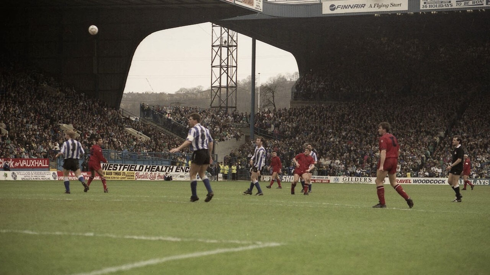
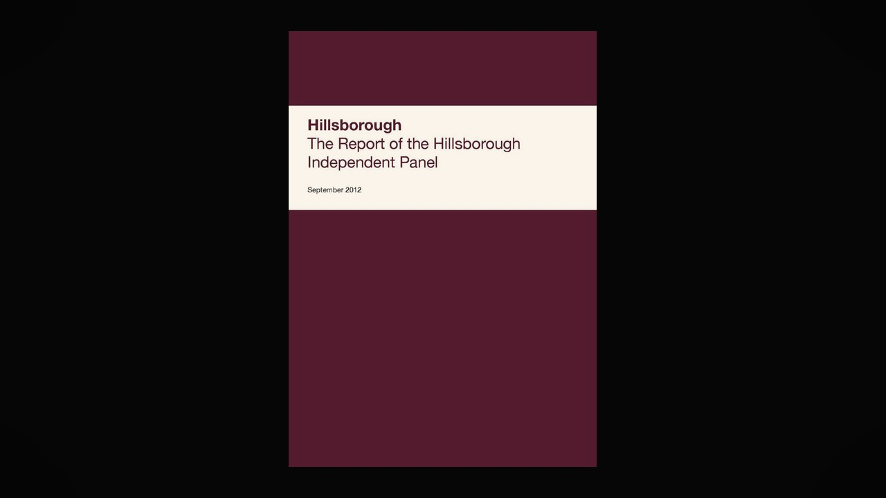
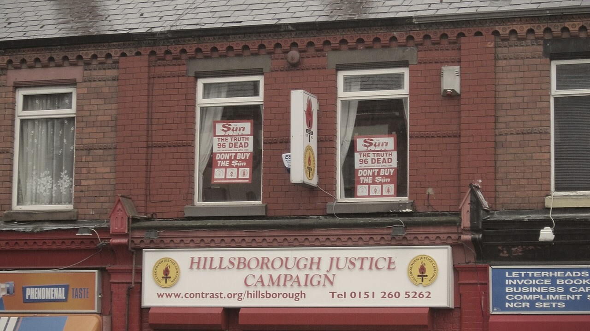
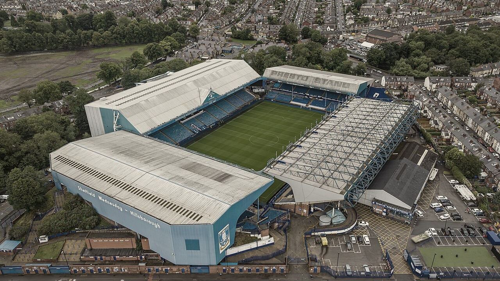
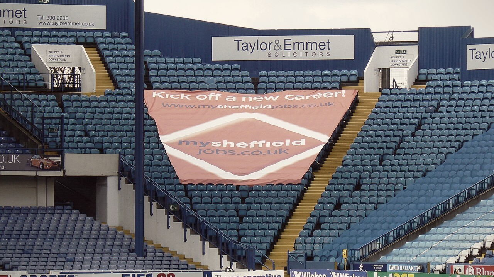
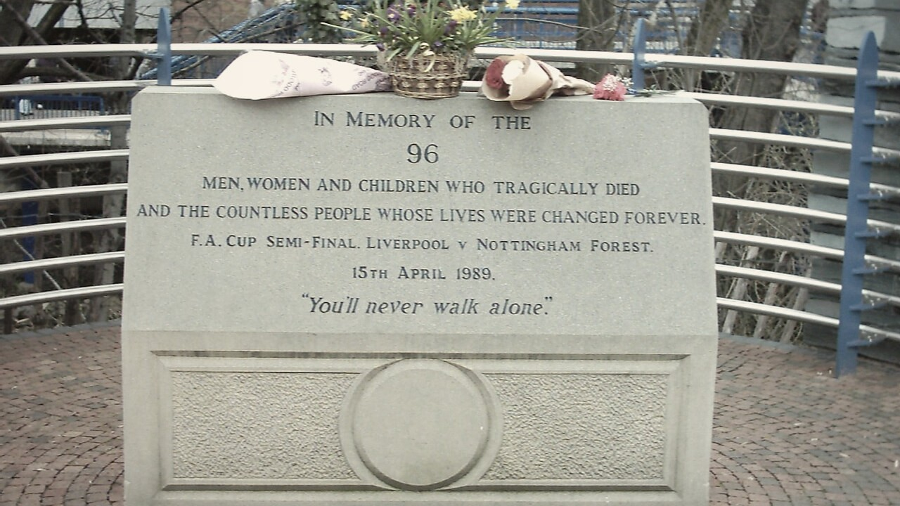

15 de abril de 1989
Sheffield · Inglaterra
15h06

97
torcedores do Liverpool morreram
esmagados nas arquibancadas
Leppings Lane · Hillsborough
GRAMADO
1-2
3
4
5
6-7
TÚNEL
LEPPINGS LANE
FILA LÁ FORA
PORTÃO C
SETORES 3 e 4
LOTADOS
GRADES
✕
✕
✕
✕
6
minutos de jogo
enquanto gente morria encostada na grade
O inquérito inicial
culpou os torcedores: embriaguez e invasão
23 anos depois
Painel Independente · 2012

O que o painel provou
—
164 depoimentos da polícia foram alterados
—
o socorro demorou a chegar
—
até 41 vítimas tinham chance de sobreviver




PRÓXIMO VÍDEO
Relatório Taylor: como os estádios mudaram
Inscreva-se
mais casos que a história não esquece
Semifinal da Copa da Inglaterra · Liverpool x Nottingham Forest
A mentira oficial caiu
Fim das grades
Assentos numerados
Relatório Taylor · 1989-1990
97 vidas